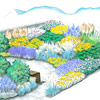
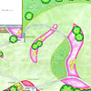
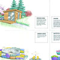
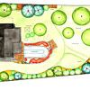
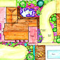
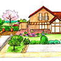

什么是插画设计
插画其实是种古老的设计应用方式，不用说中世纪无数的插画与纹样，就说在NYADC诞生前后的上个世纪早期，“那时成功的插画师就如同电影明星一般，受到万众瞩目。”那是印刷技术发展的推动下，当时新出现的各种新媒介呼唤了这个插画的“黄金时代”。这个时代，随着摄影、印刷与电脑技术的持续发展，慢慢消逝，插画业也随之没落。电脑时代的早期，人人都以为插画将死，但，如同咸鱼翻生，插画重生了，借助新的两种叫“矢量”与“像素”的东西。

插画其实是种古老的设计应用方式，不用说中世纪无数的插画与纹样，就说在NYADC诞生前后的上个世纪早期，“那时成功的插画师就如同电影明星一般，受到万众瞩目。”那是印刷技术发展的推动下，当时新出现的各种新媒介呼唤了这个插画的“黄金时代”。这个时代，随着摄影、印刷与电脑技术的持续发展，慢慢消逝，插画业也随之没落。电脑时代的早期，人人都以为插画将死，但，如同咸鱼翻生，插画重生了，借助新的两种叫“矢量”与“像素”的东西。